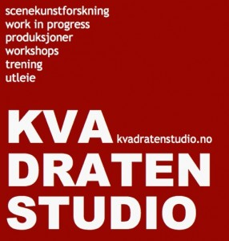

Morgentrening - rabatterte klippekort
- Kategori:
- Tverrfaglige kurs
Tverrfaglige kurs
Åpent for profesjonelle skuespillere og andre profesjonelle deltakere med spesifisert bakgrunn og erfaring. Se søknadsteksten for spesifikasjoner. Legg ved CV. - Dato:
- 27.01.2014 til 28.05.2014
- Start kl :
- 09:00
- Slutt kl :
- 10:00
- Pris:
- 750,-
- Adresse:
- Norsk Skuespillersenter, Welhavensgate 1, Oslo
 Norsk Skuespillersenter samarbeider med KVADRATEN STUDIO (tidl. Studio 18) om å tilby profesjonell morgentrening for skuespillere. Profesjonelle scenekunstnere kan kjøpe klippekort til redusert pris gjennom Norsk Skuespillersenter.
{kind=link}
Når?
Morgentreningen foregår fra kl. 09:00 - 10:00, mandag til torsdag hver uke (untatt ferier og helligdager). Programmet er foreløpig lagt fram til 29. mai.
Hvor
Våren 2014 vil morgentreningen foregå i lokalene til Norsk Skuespillersenter i Welhavensgate 1.
For hvem?
KVADRATEN STUDIO retter seg i hovedsak inn mot det profesjonelle scenekunstmiljøet (skuespillere, dansere, regissører, koreografer, musikere, pedagoger, performere), med 3-årig utdannelse på høyskolenivå eller flerårig profesjonell arbeidserfaring. Studenter er også velkommen. Skuespiller- og danseralliansen er blant de som benytter seg av tilbudet.
Norsk Skuespillerforbund støtter tilbudet med lokaler, og til gjengjeld får medlemmer ekstra rabatt! Se priser lenger ned.
Program for våren
Se tabellen for oppdatert program:
{kind=link}
Informasjon om metoder og pedagoger kan du lese her: OM TRENINGEN og PEDAGOGENE
Kjøp klippekort
Klippekortene har 10 klipp og varer i 6 måneder fra første gangs bruk. Rabatterte klippekort bestilles ved å melde seg på via vårt vanlige påmeldingsskjema: Påmelding
- Profesjonelle skuespillere, skuespillerstudenter og noen grupper profesjonelle scenekunstnere (dansere, koreografer, performere) kan kjøpe rabatterte klippekort gjennom Norsk Skuespillersenter til 750,- kroner. Send CV når du melder deg på.
- Medlemmer av NSF får ytterligere rabatt og kan kjøpe klippekort til kun 500,- kroner!
- Klippekort til full pris koster 1500,- og kan kjøpes direkte fra KVADRATEN STUDIO ved oppmøte. Drop-in betales cash, alt annet faktureres.
Drop in kr.170,-
1 uke (4dg sammenhengende trening) kr.500,-
1 måned (16dg sammenhengende trening) kr.1600,-
Studenter 10% rabatt
Kontkakt KVADRATEN STUDIO
Har du spørsmål om morgentreningen? Skriv til kvadratenstudio(a)gmail.com eller ring 47630376 (Henriette Blakstad), eller 90100777 (Alicja Ziolko).
Kvadraten Studio har også en facebookside.
Hvis spørsmålet gjelder rabatterte klippekort kan du kontakte Norsk Skuespillersenter.